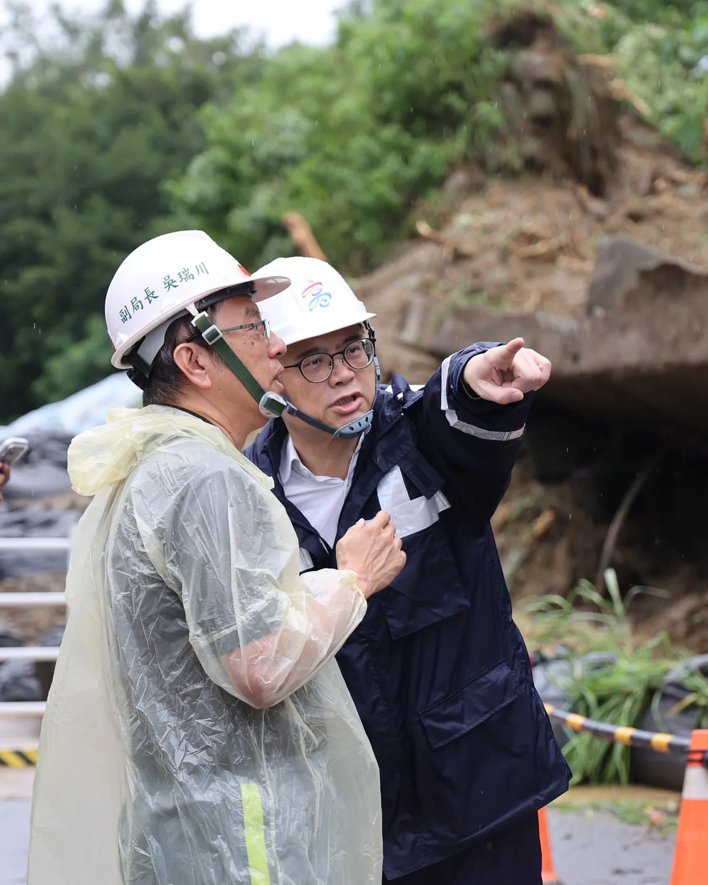
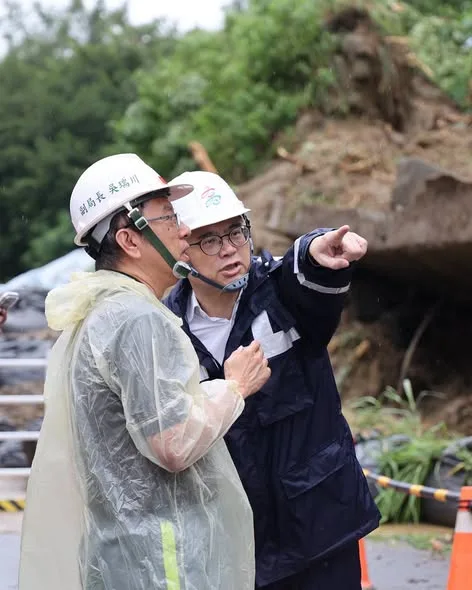
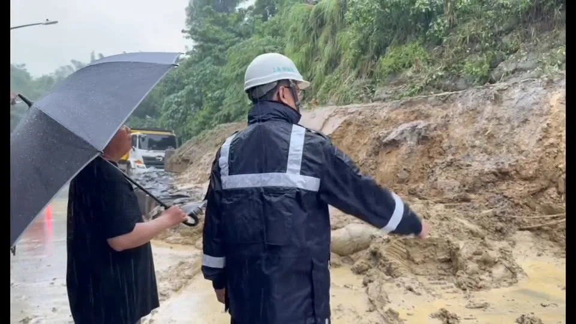
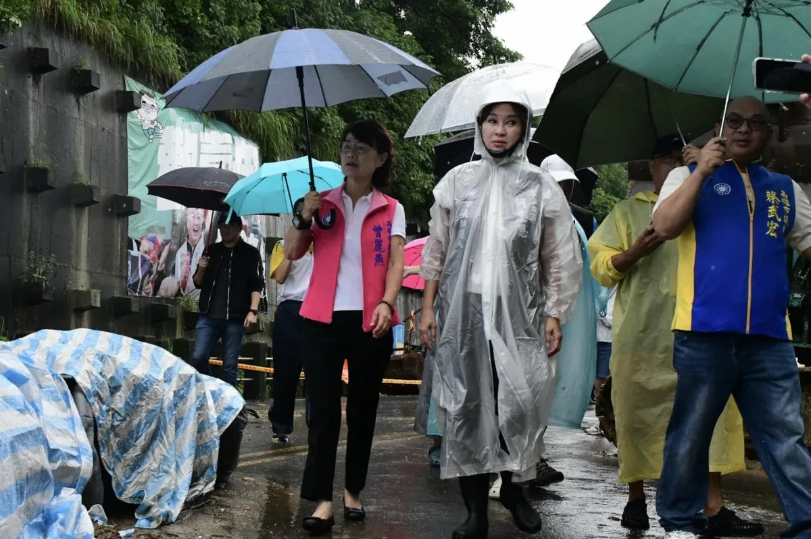

柯志恩KoChihEn

緊急公告‼️ 由於天候不佳，為考量民眾交通安全，原定今日 #燕巢區 廟口那卡西活動取消，將擇期另行舉行。 造成大家不便，敬請見諒。
Posts
緊急公告‼️ 由於天候不佳，為考量民眾交通安全，原定今日 #燕巢區 廟口那卡西活動取消，將擇期另行舉行。 造成大家不便，敬請見諒。

#臺中農產外交官 出任務！ 把 #臺中好農產 推向世界 🌍 臺中不只是製造業大城，也是農業大城。身為農家子弟，我知道農民不怕辛苦，最怕天災與滯銷。政府不能等受災才補助、等滯銷才促銷，必須比災害早一步、比農民多想一步！ 啟臣將推動五大行動：再造 #臺中領鮮 品牌、營養午餐在地契作、成立智慧農業臺中隊、升級 #臺中農易通 APP，並建置農業災害預警細胞簡訊。 讓科技走進農田、在地食材走進校園、「臺中領鮮」走向世界。農民認真打拚，政府就要做最大的後盾！💪 #臺中啟程 #打造旗艦城 #臺中味 #安心味


@zenolai:上週五，小港松富街擋土牆發生坍塌，我第一時間聯繫相關單位，並趕赴現場掌握狀況。 今天上午，我再次前往現場了解最新情形，確認居民安置與邊坡安全，也要求相關單位持續加強現場防護，確保居民安全。 受到近期連續降雨影響，邊坡土體含水量增加，加上擋土牆已有34年，使原有邊坡承受更大壓力，凸顯面對極端氣候，老舊設施需要持續強化的重要性。 目前市府已預防性疏散7戶、28位居民，並完成危險樹木移除、崩塌區域覆蓋及安全防護，優先確保居民安全。 接下來，我會持續協調中央、地方，爭取復建經費支持。目前初步評估，整體復建工程經費可能超過一億元，將請市府儘速完成復建計畫，加快工程推動。 除了重建擋土牆，也同步檢視周邊邊坡，做好必要補強、排水與智慧監測，提升整體防護能力，讓工程不只是修復，更能從根本降低未來風險。把安全做好，把韌性做強，讓居民住得更安心。

以港立市、與海共生：用 5G AIoT 鏈接全球，讓高雄智慧海洋航向世界！ #高雄 是一座「以港立市、與海共生」的城市，航運與港口一直是高雄與我國經濟發展的核心。然而，傳統航運長期面臨「海上斷網」與「資料破碎」的數位斷層。日前我到高雄在地的摯陞數位科技亞灣辦公室參訪，看到他們如何解決這塊航運的長期痛點，真的備受震撼！ #摯陞科技 建立了一條從「船、海、岸、雲」完整的資料動脈，透過感測器、低軌衛星與4G/5G多通道通訊及AI 大數據，把船上的各種格式不一的儀表雜訊，轉化為標準化、可分析的決策訊號，不僅能即時掌握海況避險，確保船舶在海上不再失聯，更能將海面回傳的資料匯集成即時戰情圖，應用AI影像識別、任務排程與智能告警，讓岸端管理階層能迅速決策並與船舶同步。 還可整合全球 AIS大數據，提供船隻最佳航線推薦、CII碳強度指標預測與風險警示，讓航運數位轉型朝向大數據預測與永續（ESG）管理邁進。這正是高雄發展「智慧海洋」最需要的原創技術！ 這次參訪，也讓我看見高雄推動產業升級的三大關鍵藍圖： 1. 跨域強強聯手，打造智慧外銷供應鏈 摯陞的技術已打入台船、陽明海運、中鋼運通及海軍、海巡署等國家級供應鏈。高雄有深厚的造船與金屬加工根基，高雄市政府未來要扮演最強媒合者，將在地製造與 AIoT 智慧技術結合，讓台灣的「智慧船舶」大步邁向國際市場！ 2. 開放「沙盒」試驗場域，加速無人載具落地 摯陞在無人船（USV）的研發，展示了船隻群控管理與衛星鏈路的強大整合力。智慧船舶的研發需要專屬水域，高雄市政府應支持研發業者，規劃完善的試驗沙盒，提供自動航行與衛星通訊等測試環境，讓無人載具技術在高雄港灣順利落地。 3. 成為新創最強後盾，注入研發資金與資源 對於像摯陞科技這樣，具備深厚研發實力、願意「穿著白鞋進場，穿著灰鞋出來」踏實耕耘的年輕團隊，無論是人才培育、國際視野還是研發資金的對接，高雄市政府都應該扮演更積極、更有彈性的協助角色，包括成立跨局處的單一窗口，高效對接產官學研資源；同時，市府更要成為在地企業爭取中央資源與補助的最佳後盾。 感謝 #陳聖文 執行長與摯陞團隊的努力，為台灣留下了不起的海事原創技術。我若有機會帶領高雄這個大家庭，一定會持續做產業最強的靠山，讓高雄的海洋產業，航向世界、航向未來。
風雨不斷，更懂平安可貴；一炷清香，祈願高雄平安。 #中元節 前後，陸續走訪各地普渡活動，無論是路竹慧賢宮、高雄港口慈濟宮、大寮包公廟、路竹新益工廠、三鳳中街，以及瑞興市場等，和鄉親們一同祈福、感受地方濃濃的人情味。 近期風雨不斷，更讓人感受到平安的珍貴。願每一份誠心化作祝福，祈求國泰民安、風調雨順，也祝福民俗月期間，大家平安健康、彼此照顧，事事順心。 #高雄 #平安

@zenolai:從簡、從速、從寬，高雄農業災損啟動「免勘查」措施 為了讓受豪雨影響的農民朋友能更快申請農業災害救助，農業部公告，針對8月下旬豪雨造成的農作物損害，啟動簡化措施，落實「從簡、從速、從寬」。 這次高雄市全區適用，符合以下條件的農作物，區公所將採簡化程序，得「免勘查」辦理： 🔺適用地區：高雄市全區 🔺適用農作物：蔬菜全品項、酪梨、木瓜、番石榴 🔺注意事項：以「塑膠布溫網室」栽培的農作物不適用此簡化措施。 各區公所接下來會陸續公告受理時間，也請受災農民朋友留意所在地區公所的最新消息，在期限內提出申請。

@prof.kochihen:高雄市連日豪雨，昨日下午小港松富街發生土石崩落意外，大量土石沖垮擋土牆，崩落的土石就在民眾家門前，第一時間我已經掌握訊息，並請黨籍議員前往關心，也先讓市府團隊盡快處理。 高雄今日凌晨起再降暴雨，我擔心災害擴大，臨時排開行程，與曾麗燕議員、蔡武宏 議員與陳麗娜議員前往現場，並與山明里陳阿子 里長一同關心。市府初步已緊急疏散部分居民，但豪雨未止，我們也請市府評估是否需再把警戒範圍擴大，並盡快做災害潛勢評估。 守護市民安全是首要之務，我們支持市府率先防災，若有任何需檢討、監督、協助之處，留待日後再做討論，也請住在附近市民朋友注意安全，配合市府引導指揮。 也祈求大雨盡快過去，高雄一切平安。

@hsiehlungchieh:幾天前，咱台南安南區海佃路二段不幸發生了震驚全國的非法化學廢棄物大爆炸事故。現場因違法堆置具易燃禁水性的鋁、鎂金屬廢料與廢油，在深夜遭逢大雨時催化引發猛烈連環氣爆，巨大火球與蕈狀雲瞬間將方圓百公尺的社區變成如同戰地般的險境。 這場災害不僅造成15人受傷、數十輛救災車與民車損毀，受波及與受損的民宅更將近300戶，許多鄉親看著滿目瘡痍、窗框全毀的家園，在風雨中欲哭無淚。 面對鄉親們的無助，地方政府此時的角色至關重要。更令人憂心的是，涉嫌非法跨區傾倒廢棄物的王姓主嫌，早在今年六月就已潛逃越南遭到通緝。當無良業者人去樓空、逃往國外時，許多受災戶面臨殘破的家園，一邊要承擔驚人的修繕費用，一邊更深深恐懼未來將陷入「求償無門」的司法泥淖。這時候，城市的治理格局與主政者的魄力，就是災民唯一的指望。 面對如此重大的公安危機，謝龍介在此具體主張，並鄭重呼籲黃偉哲市長，應該引進並落實新竹市高翠路爆炸案模式：

力挺無人機！2400億強化國防與產業，高雄市民也支持 立法院8月27日三讀通過《無人載具產業發展條例》，未來六年將編列2400億元預算。 我支持國防，更支持把國防產業真正做起來。國民黨提出的2400億元版本，相較行政院2100億元版本，涵蓋空中、水面、水下及地面無人載具，範圍更完整，也更能兼顧國防需求與產業發展。 而且，這不只是國民黨的主張。根據風傳媒今日公布的最新調查，37.6%的高雄市民支持2400億元版本，支持度是2100億元版本的兩倍以上。高雄鄉親用民意告訴我們：支持國防，也支持台灣把無人機產業做起來。 今年我持續走訪高雄在地企業，了解產業需求；日前美國亞利桑那州代表團來台尋找無人機合作夥伴時，我也主動向美方推介高雄完整產業鏈。經過積極爭取，代表團在8月於高雄舉辦無人機商務洽談會，讓高雄企業直接與國際市場接軌。 高雄有岡山、路竹的國防航太與精密製造聚落，加上AI、半導體、電池、通訊等產業基礎，有條件成為台灣無人機產業的重要基地。 另外高雄擁有亞灣，更有完整的產學研能量，包括中山大學、高雄科技大學、以及去年進駐高雄的國立陽明交通大學也蓄勢待發、一起助攻培力人才。未來高雄不能只做傳統製造與造船重鎮，更應向上升級、成為全球智慧海空無人系統的研發、製造與軍民通用基地。 我認為未來的市政應推動「高雄海空無人載具科技產業廊帶」，串聯產業聚落，結合金屬中心與在地大學研究資源，建立從輕量化複材機身、5G 飛控資安、海空兩棲感測，到實域測試與維修後勤的完整產業鏈，並全力向中央爭取國家級無人機與無人船艇實測驗證基地落腳高雄。 同時，結合高雄各大學的資通訊與機電學院，設置「無人載具與航太科技專班」，培育飛控演算法、資安導航與系統整合人才，替高雄在地青年與工科人才創造半導體之外，另一條通往高薪與高科技的發展道路。 如果半導體是台灣第一座護國神山，無人機就有機會成為下一座。未來無人機不只可以強化國防，也能應用在高雄山區救災、積淹水監測、火災搜救及偏鄉運輸，創造更多產業與應用場景。 國防要顧，產業也要拚。 8月14日，634億元無人機預算全數通過；8月27日，2400億元《無人載具產業發展條例》也三讀通過。這已經證明，真正被打臉的，是那些把「監督預算」扭曲成「阻擋產業」的人。 從634億元到2400億元，國民黨一路支持國防、支持無人機產業。高雄需要的，是把無人機產業真正做起來，讓國防需求轉化為產業機會、讓高雄企業接軌國際，而不是把無人機變成民進黨選舉攻防、政治操作的工具。 我會繼續替高雄爭取資源，把高雄的產業實力變成國防實力，也把國防需求變成高雄的產業機會。
柯志恩勘災拋錨爬窗被酸 陳菁徽酸和卓榮泰不一樣「修車錢要自己付」 〈 柯志恩勘災拋錨爬窗被酸 陳菁徽酸和卓榮泰不一樣「修車錢要自己付」 〉本文來自於《 龍傳媒新聞 iNews Long 》。 豪雨狂炸高雄，淹出政治口水，國民黨高雄市長參選人柯志恩勘災時座車拋錨，被迫「爬車窗」脫困，遭綠營及側翼批評自導自演...

與日本學者交流，從AI主權談台北的國際治理未來。 ⠀ 日本東京大學東洋文化研究所松田康博教授，以及「兩岸關係研究小組」的日本學者們見面，從國際情勢談到AI治理、資料安全，以及城市面對未來挑戰所需要的治理能力。 ⠀ 台灣發展AI，不能只追求技術，更要建立屬於自己的資料基礎，打造台灣「AI主權」，但要訓練出台灣自己使用的AI數據，關鍵在建立可信的本土資料庫，守住AI時代的自主性。 ⠀ 城市治理也早已跨越單一城市的疆界。從AI治理、資訊安全到防災韌性，台北都應該主動連結國際，成為民主城市共同面對全球挑戰的重要夥伴。 ⠀ 這就是我提出「無限城論壇」的原因，台北要與東京、紐約、倫敦等國際城市建立更深的合作，共同討論下一個時代的治理方向。

治水沒有終點！從單點改善走向整體流域治理，打造更有韌性的高雄 今早我和 邱志偉 委員，陪同經濟部長龔明鑫、農業部長陳駿季及中央、地方團隊，從梓官一路到岡山、永安，針對北高雄治水量能、農漁業災損及後續工程逐案檢討。 這波豪雨，北高雄多區達到超大豪雨等級，梓官最大24小時雨量539毫米、橋頭及彌陀達540毫米，梓官事件累積雨量更達1101毫米。高雄26座滯洪池、排水及抽水系統皆發揮成效，面對極端氣候挑戰，我們也會持續提升整體防洪韌性，讓各項治水建設更加完善。 因此，我再次向中央爭取支持土庫流域13.8億元整體工程、北溝流域5.1億元治理計畫，並要求持續推進滯洪池、抽水站、老舊機組汰換及護岸改善；地方反映的典寶溪分洪方案，也請相關單位進一步評估。 對於受災農漁民，我與高雄隊立委先前共同爭取畜牧業救助、農漁業災損現金救助及低利貸款，今天也再請農業部研議延長貸款免息期間，以「從優、從寬、從簡、從速」的原則，減輕大家復耕、復養的壓力。 高雄下一階段的治水，要推動「精準治水、韌性治城」。 從過去的單點改善，進一步走向整體流域治理，整合各項防汛硬體，提升城市防災韌性。 未來，我會持續與高雄隊友攜手，逐項改善、全區補強，守護市民生命財產安全，守住農漁民打拚的家園。 黃秋媖-動保議員 蔡秉璁 高雄向前衝

上週五，小港松富街擋土牆發生坍塌，我第一時間聯繫相關單位，並趕赴現場掌握狀況。 今天上午，我再次前往現場了解最新情形，確認居民安置與邊坡安全，也要求相關單位持續加強現場防護，確保居民安全。 受到近期連續降雨影響，邊坡土體含水量增加，加上擋土牆已有34年，使原有邊坡承受更大壓力，凸顯面對極端氣候，老舊設施需要持續強化的重要性。 目前市府已預防性疏散7戶、28位居民，並完成危險樹木移除、崩塌區域覆蓋及安全防護，優先確保居民安全。 接下來，我會持續協調中央、地方，爭取復建經費支持。目前初步評估，整體復建工程經費可能超過一億元，將請市府儘速完成復建計畫，加快工程推動。 除了重建擋土牆，也同步檢視周邊邊坡，做好必要補強、排水與智慧監測，提升整體防護能力，讓工程不只是修復，更能從根本降低未來風險。把安全做好，把韌性做強，讓居民住得更安心。
凝聚基層與青年力量💪 啟臣要讓臺中更安全、青年更有未來✈️ 啟臣今接連出席 #火鳳凰 與 #豐原青年軍 後援會，滿場義消、婦宣夥伴與家鄉青年的熱情相挺，讓我充滿感動與責任。 曾是 #海龍蛙兵 的我深知，救災沒有重來的機會。打火兄弟逆向挺進危險，您們 #守護市民 ，未來市府絕對守護您們！ 啟臣承諾，將全面導入AI與無人載具等科技救災、升級裝備，打造能預防風險的「韌性城市」，確保每位出勤夥伴都能平安回家。 回到我開始服務的起點豐原，看見在地青年站出來，這是一份必須扛起的託付。青年願不願意留下，決定了城市的未來。我將全力推動產業與薪資雙升級，把好工作、好機會留在臺中，讓年輕人敢在 #臺中追夢、敢在 #臺中成家。 從豐原出發，為全臺中打拚！選戰倒數90天，懇請市民們，將期待化為選票，支持啟臣與國民黨議員團隊，我們一起打造令人安心、有機會、有未來的 #國際旗艦大臺中！ #臺中啟程 #打造旗艦城 #科技救災 #韌性城市 #青年發展 #臺中升級 #幸福加給

爭取小港松富街復建經費 全面建構韌性高雄 昨日小港松富街發生擋土牆坍塌，我在第一時間掌握狀況，聯繫市府工務局等單位，協調緊急處置。今天也到現場，了解居民安置及邊坡安全情形，並針對重建所需經費，致電行政院秘書長爭取中央支持。 目前市府已預防性疏散7戶、28位居民，並移除危險樹木、覆蓋崩塌區域及設置安全防護，避免持續降雨造成二次災害。 這座擋土牆已有34年，初步估算重建約需數千萬元，將請市府儘速提出復建計畫，爭取中央經費，加速推動重建工程。 目標力拚明年汛期前完成重建，並以長久性、系統性的方式全面檢視邊坡及周邊安全，結合必要的補強與智慧監測，從根本降低風險，讓居民住得更安心。

@prof.kochihen:高雄連日豪雨，小港松富街昨日下午發生土石崩落，今早雨勢再起，第一時間與曾麗燕、陳麗娜、蔡武宏議員前往現場關心。 目前市府已緊急疏散部分居民，也要求持續評估災害潛勢，必要時擴大警戒範圍。守護市民安全是第一優先，請附近居民務必提高警覺、配合疏散指示。 祈求雨勢早日減弱，高雄平安。

高雄市連日豪雨，昨日下午 #小港 松富街發生土石崩落意外，大量土石沖垮擋土牆，崩落的土石就在民眾家門前，第一時間我已經掌握訊息，並請黨籍議員前往關心，也先讓市府團隊盡快處理。 高雄今日凌晨起再降暴雨，我擔心災害擴大，臨時排開行程，與 #曾麗燕 議員、#蔡武宏 議員與 #陳麗娜 議員前往現場，並與 #山明里 陳阿子 里長一同關心。市府初步已緊急疏散部分居民，但豪雨未止，我們也請市府評估是否需再把警戒範圍擴大，並盡快做災害潛勢評估。 守護市民安全是首要之務，我們支持市府率先防災，若有任何需檢討、監督、協助之處，留待日後再做討論，也請住在附近市民朋友注意安全，配合市府引導指揮。 也祈求大雨盡快過去，高雄一切平安。

幾天前，咱台南安南區海佃路二段不幸發生了震驚全國的非法化學廢棄物大爆炸事故。現場因違法堆置具易燃禁水性的鋁、鎂金屬廢料與廢油，在深夜遭逢大雨時催化引發猛烈連環氣爆，巨大火球與蕈狀雲瞬間將方圓百公尺的社區變成如同戰地般的險境。 這場災害不僅造成15人受傷、數十輛救災車與民車損毀，受波及與受損的民宅更將近300戶，許多鄉親看著滿目瘡痍、窗框全毀的家園，在風雨中欲哭無淚。 面對鄉親們的無助，地方政府此時的角色至關重要。更令人憂心的是，涉嫌非法跨區傾倒廢棄物的王姓主嫌，早在今年六月就已潛逃越南遭到通緝。當無良業者人去樓空、逃往國外時，許多受災戶面臨殘破的家園，一邊要承擔驚人的修繕費用，一邊更深深恐懼未來將陷入「求償無門」的司法泥淖。這時候，城市的治理格局與主政者的魄力，就是災民唯一的指望。 面對如此重大的公安危機，謝龍介在此具體主張，並鄭重呼籲黃偉哲市長，應該引進並落實新竹市高翠路爆炸案模式：

@hsiehlungchieh:幾天前，咱台南安南區海佃路二段不幸發生了震驚全國的非法化學廢棄物大爆炸事故。現場因違法堆置具易燃禁水性的鋁、鎂金屬廢料與廢油，在深夜遭逢大雨時催化引發猛烈連環氣爆，巨大火球與蕈狀雲瞬間將方圓百公尺的社區變成如同戰地般的險境。 這場災害不僅造成15人受傷、數十輛救災車與民車損毀，受波及與受損的民宅更將近300戶，許多鄉親看著滿目瘡痍、窗框全毀的家園，在風雨中欲哭無淚。 面對鄉親們的無助，地方政府此時的角色至關重要。更令人憂心的是，涉嫌非法跨區傾倒廢棄物的王姓主嫌，早在今年六月就已潛逃越南遭到通緝。當無良業者人去樓空、逃往國外時，許多受災戶面臨殘破的家園，一邊要承擔驚人的修繕費用，一邊更深深恐懼未來將陷入「求償無門」的司法泥淖。這時候，城市的治理格局與主政者的魄力，就是災民唯一的指望。 面對如此重大的公安危機，謝龍介在此具體主張，並鄭重呼籲黃偉哲市長，應該引進並落實新竹市高翠路爆炸案模式：
南台灣大淹水！高雄市議員怒批民進黨執政高雄淹水始終無法改善 〈 南台灣大淹水！高雄市議員怒批民進黨執政高雄淹水始終無法改善 〉本文來自於《 龍傳媒新聞 iNews Long 》。 颱風還沒來，南部已經連續淹水好幾天。高雄市議員陳美雅，直說高雄現在一下大雨，民眾就人心惶惶，晚上不敢睡覺..

#臺中農產外交官 出任務！ 把 #臺中好農產 推向世界 🌍 臺中不只是製造業大城，也是農業大城。身為農家子弟，我知道農民不怕辛苦，最怕天災與滯銷。政府不能等受災才補助、等滯銷才促銷，必須比災害早一步、比農民多想一步！ 啟臣將推動五大行動：再造 #臺中領鮮 品牌、營養午餐在地契作、成立智慧農業臺中隊、升級 #臺中農易通 APP，並建置農業災害預警細胞簡訊。 讓科技走進農田、在地食材走進校園、「臺中領鮮」走向世界。農民認真打拚，政府就要做最大的後盾！💪 #臺中啟程 #打造旗艦城 #臺中味 #安心味

治水沒有終點！從單點改善走向整體流域治理，打造更有韌性的高雄 今早我和 邱志偉 委員，陪同經濟部長龔明鑫、農業部長陳駿季及中央、地方團隊，從梓官一路到岡山、永安，針對北高雄治水量能、農漁業災損及後續工程逐案檢討。 這波豪雨，北高雄多區達到超大豪雨等級，梓官最大24小時雨量539毫米、橋頭及彌陀達540毫米，梓官事件累積雨量更達1101毫米。高雄26座滯洪池、排水及抽水系統皆發揮成效，面對極端氣候挑戰，我們也會持續提升整體防洪韌性，讓各項治水建設更加完善。 因此，我再次向中央爭取支持土庫流域13.8億元整體工程、北溝流域5.1億元治理計畫，並要求持續推進滯洪池、抽水站、老舊機組汰換及護岸改善；地方反映的典寶溪分洪方案，也請相關單位進一步評估。 對於受災農漁民，我與高雄隊立委先前共同爭取畜牧業救助、農漁業災損現金救助及低利貸款，今天也再請農業部研議延長貸款免息期間，以「從優、從寬、從簡、從速」的原則，減輕大家復耕、復養的壓力。 高雄下一階段的治水，要推動「精準治水、韌性治城」。 從過去的單點改善，進一步走向整體流域治理，整合各項防汛硬體，提升城市防災韌性。 未來，我會持續與高雄隊友攜手，逐項改善、全區補強，守護市民生命財產安全，守住農漁民打拚的家園。 黃秋媖-動保議員 蔡秉璁 高雄向前衝
上週五，小港松富街擋土牆發生坍塌，我第一時間聯繫相關單位，並趕赴現場掌握狀況。 今天上午，我再次前往現場了解最新情形，確認居民安置與邊坡安全，也要求相關單位持續加強現場防護，確保居民安全。 受到近期連續降雨影響，邊坡土體含水量增加，加上擋土牆已有34年，使原有邊坡承受更大壓力，凸顯面對極端氣候，老舊設施需要持續強化的重要性。 目前市府已預防性疏散7戶、28位居民，並完成危險樹木移除、崩塌區域覆蓋及安全防護，優先確保居民安全。 接下來，我會持續協調中央、地方，爭取復建經費支持。目前初步評估，整體復建工程經費可能超過一億元，將請市府儘速完成復建計畫，加快工程推動。 除了重建擋土牆，也同步檢視周邊邊坡，做好必要補強、排水與智慧監測，提升整體防護能力，讓工程不只是修復，更能從根本降低未來風險。把安全做好，把韌性做強，讓居民住得更安心。
凝聚基層與青年力量💪 啟臣要讓臺中更安全、青年更有未來✈️ 啟臣今接連出席 #火鳳凰 與 #豐原青年軍 後援會，滿場義消、婦宣夥伴與家鄉青年的熱情相挺，讓我充滿感動與責任。 曾是 #海龍蛙兵 的我深知，救災沒有重來的機會。打火兄弟逆向挺進危險，您們 #守護市民 ，未來市府絕對守護您們！ 啟臣承諾，將全面導入AI與無人載具等科技救災、升級裝備，打造能預防風險的「韌性城市」，確保每位出勤夥伴都能平安回家。 回到我開始服務的起點豐原，看見在地青年站出來，這是一份必須扛起的託付。青年願不願意留下，決定了城市的未來。我將全力推動產業與薪資雙升級，把好工作、好機會留在臺中，讓年輕人敢在 #臺中追夢、敢在 #臺中成家。 從豐原出發，為全臺中打拚！選戰倒數90天，懇請市民們，將期待化為選票，支持啟臣與國民黨議員團隊，我們一起打造令人安心、有機會、有未來的 #國際旗艦大臺中！ #臺中啟程 #打造旗艦城 #科技救災 #韌性城市 #青年發展 #臺中升級 #幸福加給

@zenolai:爭取小港松富街復建經費 全面建構韌性高雄 昨日小港松富街發生擋土牆坍塌，我在第一時間掌握狀況，聯繫市府工務局等單位，協調緊急處置。今天也到現場，了解居民安置及邊坡安全情形，並針對重建所需經費，致電行政院秘書長爭取中央支持。 目前市府已預防性疏散7戶、28位居民，並移除危險樹木、覆蓋崩塌區域及設置安全防護，避免持續降雨造成二次災害。 這座擋土牆已有34年，初步估算重建約需數千萬元，將請市府儘速提出復建計畫，爭取中央經費，加速推動重建工程。 目標力拚明年汛期前完成重建，並以長久性、系統性的方式全面檢視邊坡及周邊安全，結合必要的補強與智慧監測，從根本降低風險，讓居民住得更安心。
高雄連日豪雨，小港松富街昨日下午發生土石崩落，今早雨勢再起，第一時間與曾麗燕、陳麗娜、蔡武宏議員前往現場關心。 目前市府已緊急疏散部分居民，也要求持續評估災害潛勢，必要時擴大警戒範圍。守護市民安全是第一優先，請附近居民務必提高警覺、配合疏散指示。 祈求雨勢早日減弱，高雄平安。
@zenolai:今天下午，小港區松富街發生擋土牆倒塌，所幸沒有人員受傷。 市府已緊急疏散7戶、28位居民，並調派人力機具進場處理，先移除危險樹木、覆蓋崩塌區域並設置夜間警示，確保周邊居民安全。 目前現場仍在緊急處置，請民眾暫時不要靠近崩塌區域。近期豪雨過後，各地坡地及擋土牆周邊都要特別留意，行經時請放慢車速，也盡量不要將車輛停在邊坡下方，安全第一。

力挺無人機！2400億強化國防與產業，高雄市民也支持 立法院8月27日三讀通過《無人載具產業發展條例》，未來六年將編列2400億元預算。 我支持國防，更支持把國防產業真正做起來。國民黨提出的2400億元版本，相較行政院2100億元版本，涵蓋空中、水面、水下及地面無人載具，範圍更完整，也更能兼顧國防需求與產業發展。 而且，這不只是國民黨的主張。根據風傳媒今日公布的最新調查，37.6%的高雄市民支持2400億元版本，支持度是2100億元版本的兩倍以上。高雄鄉親用民意告訴我們：支持國防，也支持台灣把無人機產業做起來。 今年我持續走訪高雄在地企業，了解產業需求；日前美國亞利桑那州代表團來台尋找無人機合作夥伴時，我也主動向美方推介高雄完整產業鏈。經過積極爭取，代表團在8月於高雄舉辦無人機商務洽談會，讓高雄企業直接與國際市場接軌。 高雄有岡山、路竹的國防航太與精密製造聚落，加上AI、半導體、電池、通訊等產業基礎，有條件成為台灣無人機產業的重要基地。 另外高雄擁有亞灣，更有完整的產學研能量，包括中山大學、高雄科技大學、以及去年進駐高雄的國立陽明交通大學也蓄勢待發、一起助攻培力人才。未來高雄不能只做傳統製造與造船重鎮，更應向上升級、成為全球智慧海空無人系統的研發、製造與軍民通用基地。 我認為未來的市政應推動「高雄海空無人載具科技產業廊帶」，串聯產業聚落，結合金屬中心與在地大學研究資源，建立從輕量化複材機身、5G 飛控資安、海空兩棲感測，到實域測試與維修後勤的完整產業鏈，並全力向中央爭取國家級無人機與無人船艇實測驗證基地落腳高雄。 同時，結合高雄各大學的資通訊與機電學院，設置「無人載具與航太科技專班」，培育飛控演算法、資安導航與系統整合人才，替高雄在地青年與工科人才創造半導體之外，另一條通往高薪與高科技的發展道路。 如果半導體是台灣第一座護國神山，無人機就有機會成為下一座。未來無人機不只可以強化國防，也能應用在高雄山區救災、積淹水監測、火災搜救及偏鄉運輸，創造更多產業與應用場景。 國防要顧，產業也要拚。 8月14日，634億元無人機預算全數通過；8月27日，2400億元《無人載具產業發展條例》也三讀通過。這已經證明，真正被打臉的，是那些把「監督預算」扭曲成「阻擋產業」的人。 從634億元到2400億元，國民黨一路支持國防、支持無人機產業。高雄需要的，是把無人機產業真正做起來，讓國防需求轉化為產業機會、讓高雄企業接軌國際，而不是把無人機變成民進黨選舉攻防、政治操作的工具。 我會繼續替高雄爭取資源，把高雄的產業實力變成國防實力，也把國防需求變成高雄的產業機會。


幾天前，咱台南安南區海佃路二段不幸發生了震驚全國的非法化學廢棄物大爆炸事故。現場因違法堆置具易燃禁水性的鋁、鎂金屬廢料與廢油，在深夜遭逢大雨時催化引發猛烈連環氣爆，巨大火球與蕈狀雲瞬間將方圓百公尺的社區變成如同戰地般的險境。 這場災害不僅造成15人受傷、數十輛救災車與民車損毀，受波及與受損的民宅更將近300戶，許多鄉親看著滿目瘡痍、窗框全毀的家園，在風雨中欲哭無淚。 面對鄉親們的無助，地方政府此時的角色至關重要。更令人憂心的是，涉嫌非法跨區傾倒廢棄物的王姓主嫌，早在今年六月就已潛逃越南遭到通緝。當無良業者人去樓空、逃往國外時，許多受災戶面臨殘破的家園，一邊要承擔驚人的修繕費用，一邊更深深恐懼未來將陷入「求償無門」的司法泥淖。這時候，城市的治理格局與主政者的魄力，就是災民唯一的指望。 面對如此重大的公安危機，謝龍介在此具體主張，並鄭重呼籲黃偉哲市長，應該引進並落實新竹市高翠路爆炸案模式： 一、引進新竹「代償、代位求償」機制：比照新竹市政府在處理高翠路重大氣爆案時的魄力，台南市府應主動拉高救助層級，動用災害準備金全額墊付受災戶的房屋修繕與財產損失，讓市民不用在漫長的司法鑑定與兩手空空的通緝犯面前枯等，由「政府先扛，市民先安」！ 二、簽署債權讓與，市府統一法律追償：輔導受災住戶與車主簽署債權讓與契約，將損害賠償請求權轉讓給市府，由市府法制處整合專業律師團，統一代表市民與無良業者、共犯及背後的地主、財團打民事訴訟。由政府的公權力去對抗惡質廠商，免去百姓孤身奔波法院的折磨。 三、雷厲風行發動假扣押：市府必須第一時間啟動司法保全程序，直接凍結、假扣押涉案關係人、共犯與楊姓仲介等人的財產，徹底防範任何脫產行為，百分之百捍衛公帑與台南市民的應有權益。 四、地方稅務主動從寬減免：由台南市稅務局主動對受災區域內的受損房屋、土地及汽機車，採取「從寬、從速、從簡」原則，直接免除或停徵地方稅，給予災民最實質的喘息空間。 苦民所苦，治理城市不能只有一成不變的行政官僚思維。當市民在面臨家園破碎、未知風險的巨大衝擊時，政府就必須挺身而出，做百姓最堅強的靠山！ 龍介期待黃偉哲市長及市府團隊能展現大氣魄，立刻提升台南市的重大災害救助與求償機制，讓台南市民真正感受到這座城市給予的溫暖與承擔！你若不做，我年底當選，一定做！
賴清德喊不要淹水就責備中南部治水的錢花到哪 葉向媛：台北不是親生的 〈 賴清德喊不要淹水就責備中南部治水的錢花到哪 葉向媛：台北不是親生的 〉本文來自於《 龍傳媒新聞 iNews Long 》。 南部淹水災情慘重，賴清德總統到高雄視察治水工程時抱怨，淹水就責備中南部治水的錢花到哪裡去是不公平的...